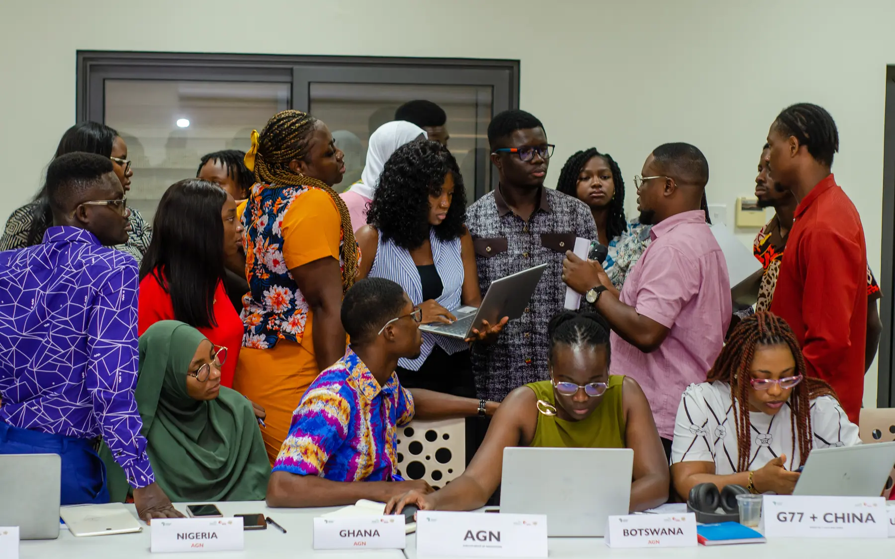
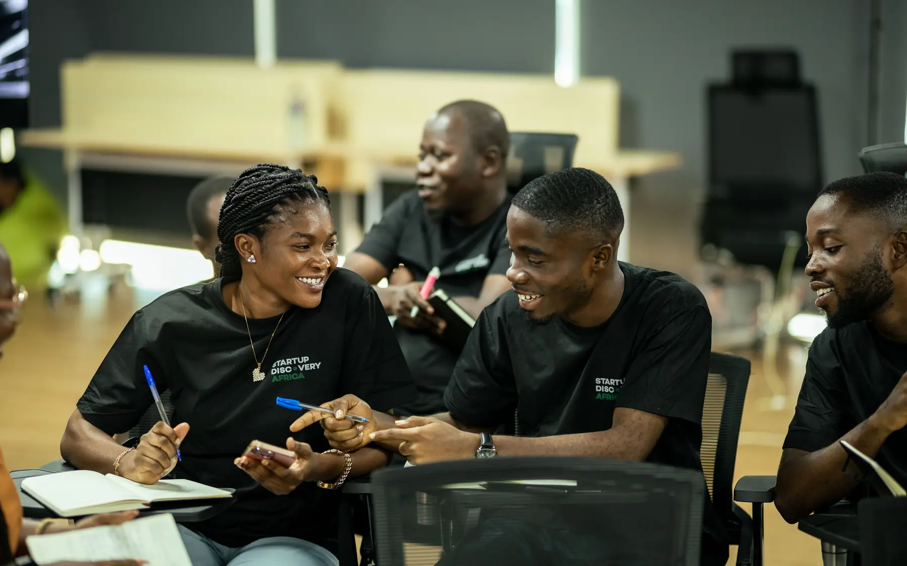
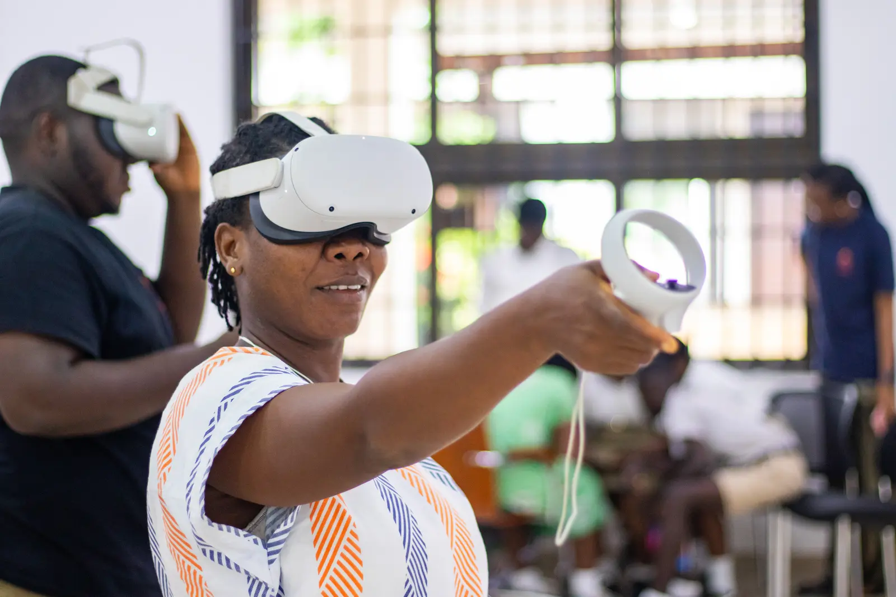
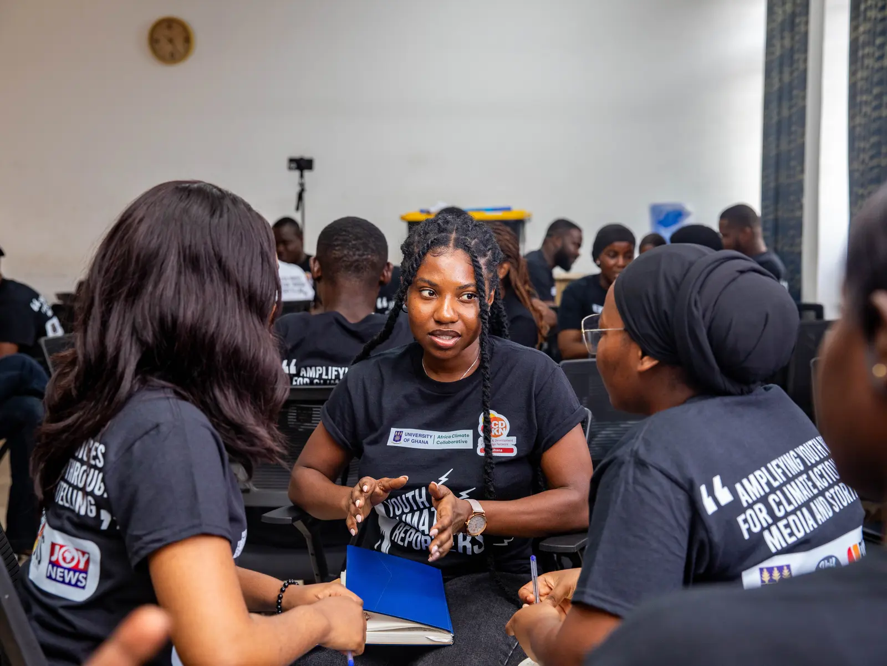

Climate and Development Knowledge Network
CDKN Ghana anchors youth, enterprise, media and community work through a global knowledge-to-action network.
Read the programme profileWe connect research, policy, creative practice and communities to advance climate resilience in Ghana and across Africa.
Beyond the Science is a Global South organisation based in Ghana.
Across seven African countries, we connect evidence, institutions, creative practice and communities to strengthen climate resilience.
About BTS2023–2026
Six co-creation labs
Each lab starts with credible evidence and co-creates it with the people who will use it.

Research shaping national and local climate plans.

Evidence turned into green business and ESG practice.
Science meeting music, film, food and podcasting.

Climate evidence in the national news cycle.

Tools that help institutions act on evidence.

Community knowledge, in forms communities already use.
Programme platform
International funding and research networks meet work rooted in Ghana.
CDKN Ghana anchors youth, enterprise, media and community work through a global knowledge-to-action network.
Read the programme profileBTS turns climate adaptation research into institutional tools and national media through ACTIVATE and Climate Evidence on JoyNews.
Read the programme profileA five-year, Wellcome-funded consortium led by KNUST across Ghana and Senegal, with BTS leading policy engagement and the Ghana workstream.
Read the programme profileFive thematic areas
The themes define what we work on. The labs define how evidence moves into use.
Field record
Scenes from BTS programmes, workshops and field activity.


Volunteer with BTS